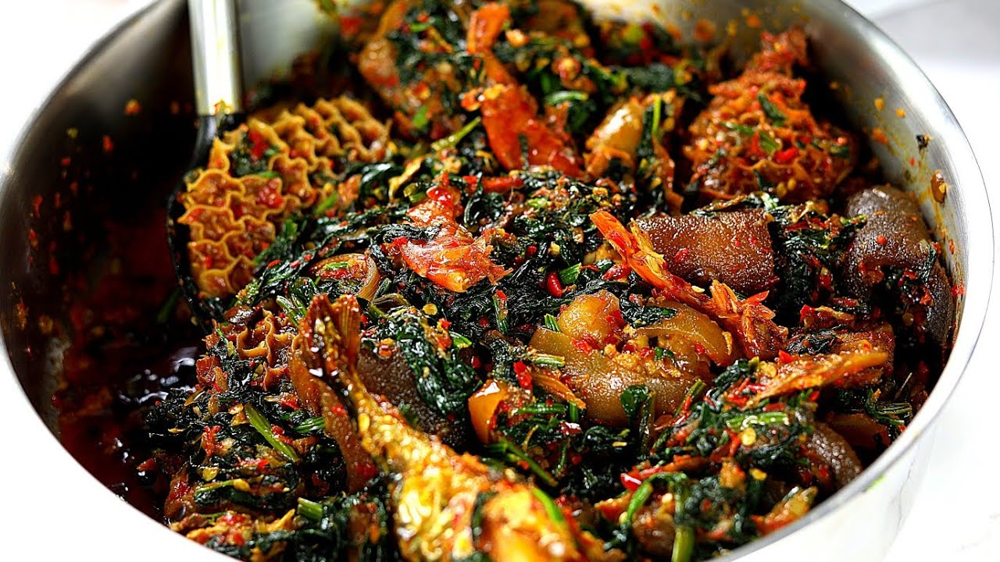

Efo Riro
- 2 lb of Chicken Breast/Thigh, cubed
- 1 lb of Shrimp, peeled
- 3 Red Bell Peppers, diced
- 1-2 Habanero/Scotch Bonnet Peppers, minced
- 2 Onions, diced
- 4 Cups of Collard Greens
- 4 Cups of Kale
- 1 Tbs Dried Crayfish
- 1 Tbs Miso Paste
- 1 Tbs Onion Powder
- 1 Tbs Coriander Powder
- 3 Tbs Palm Oil
- Salt and Pepper to taste